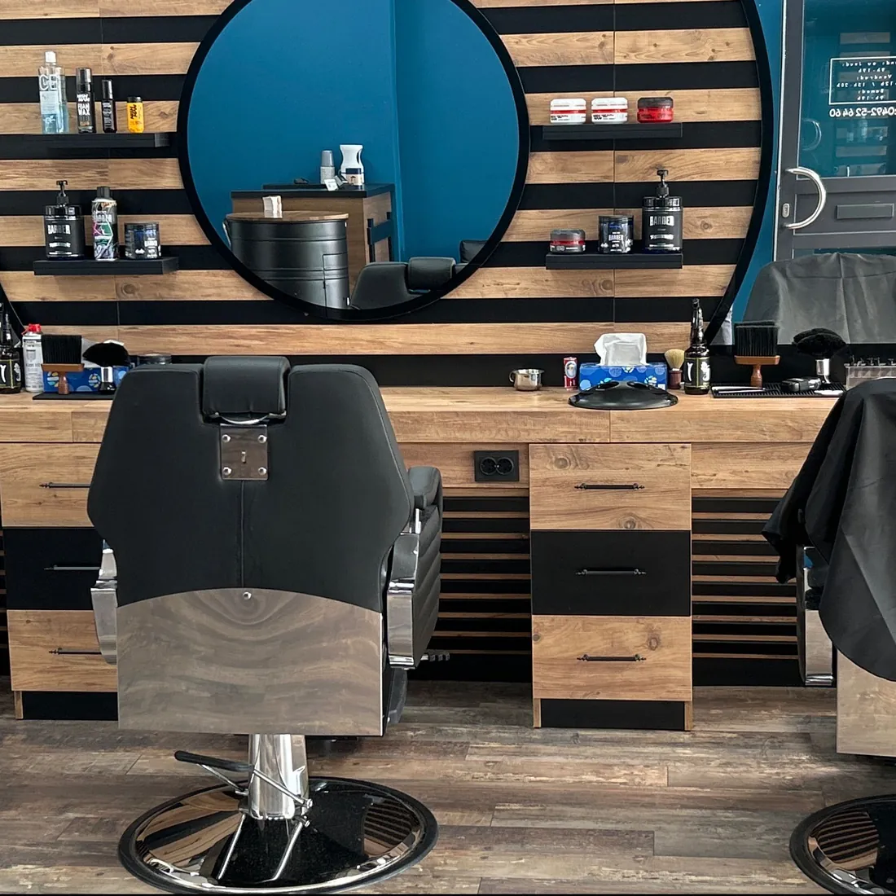
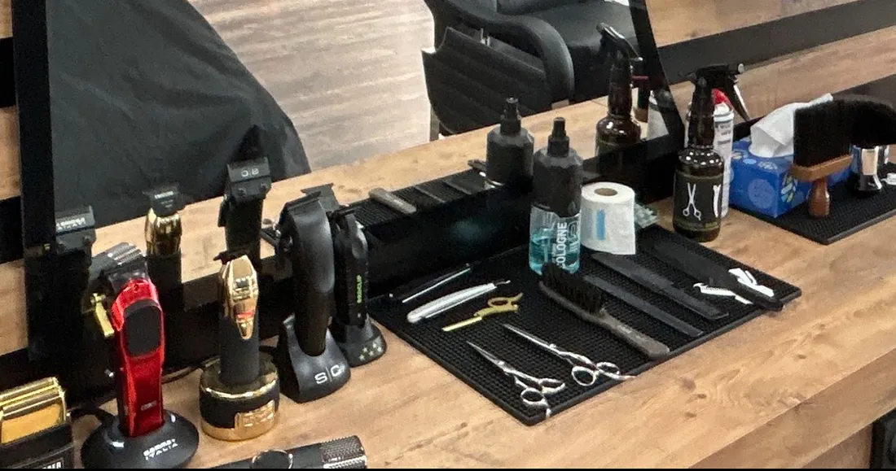
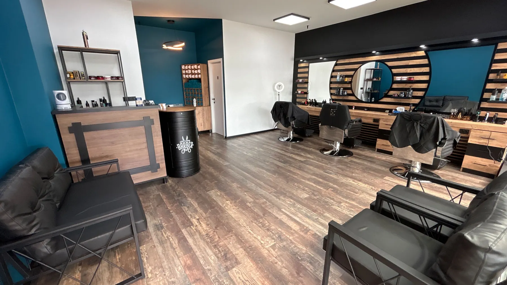
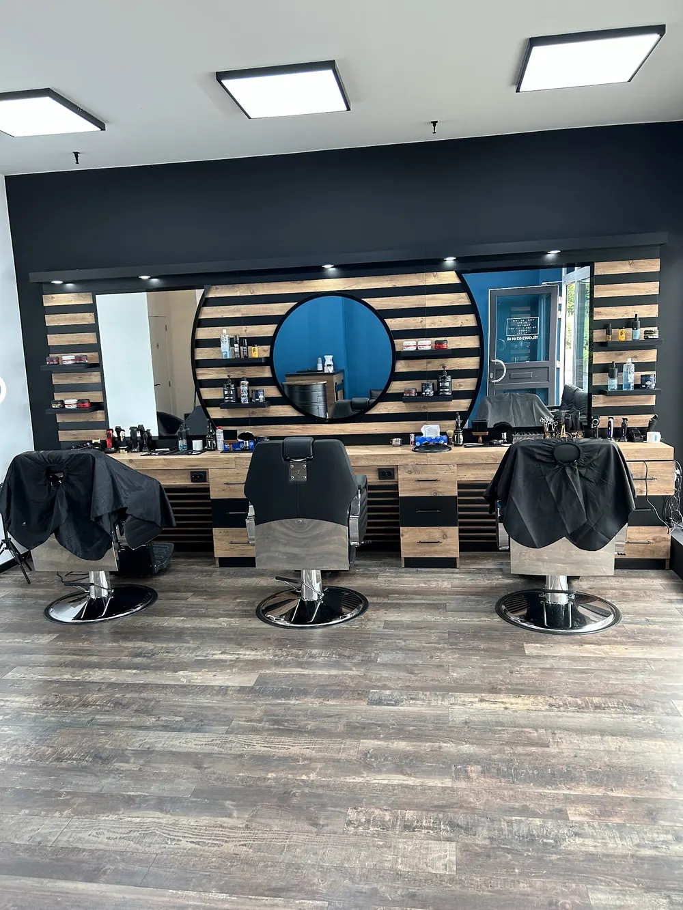
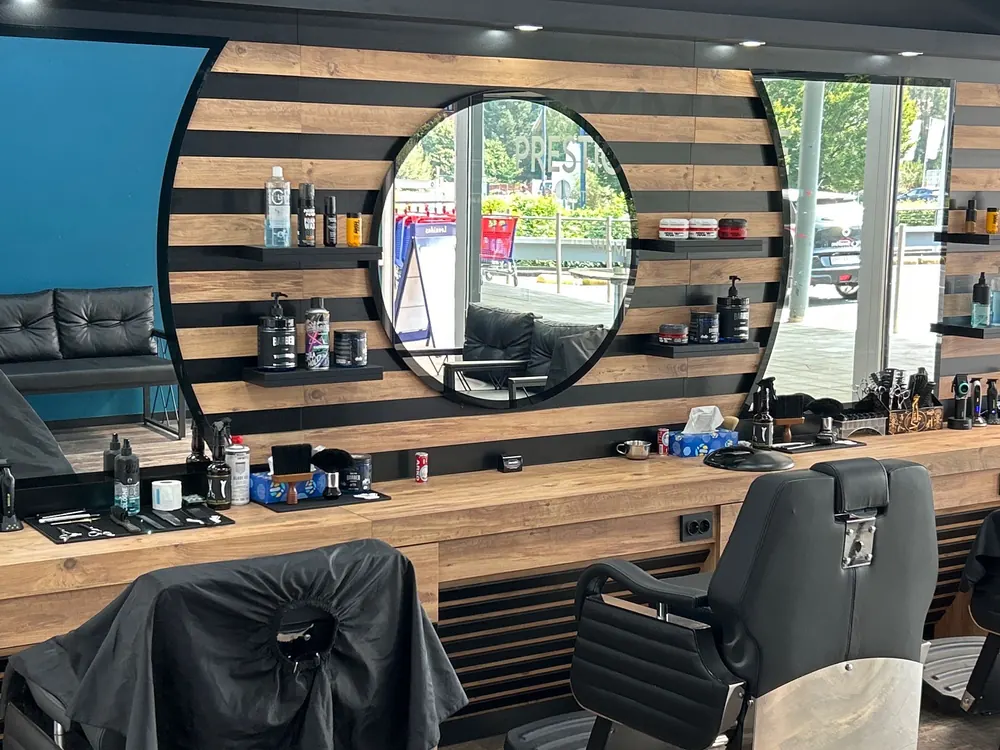
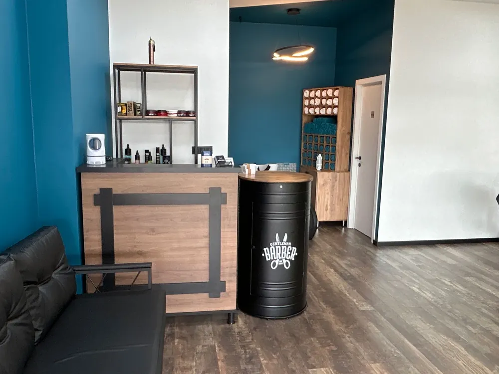
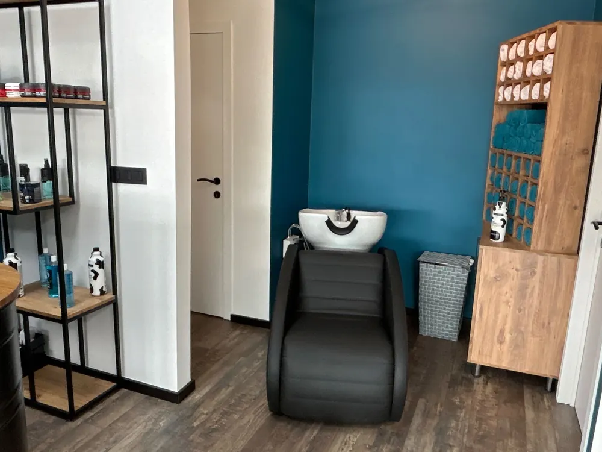
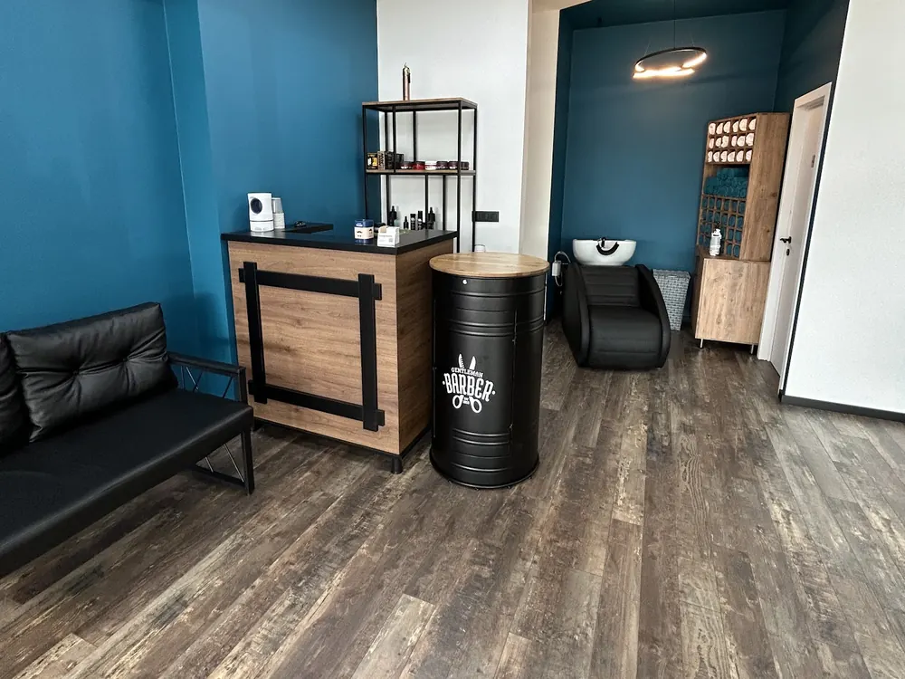
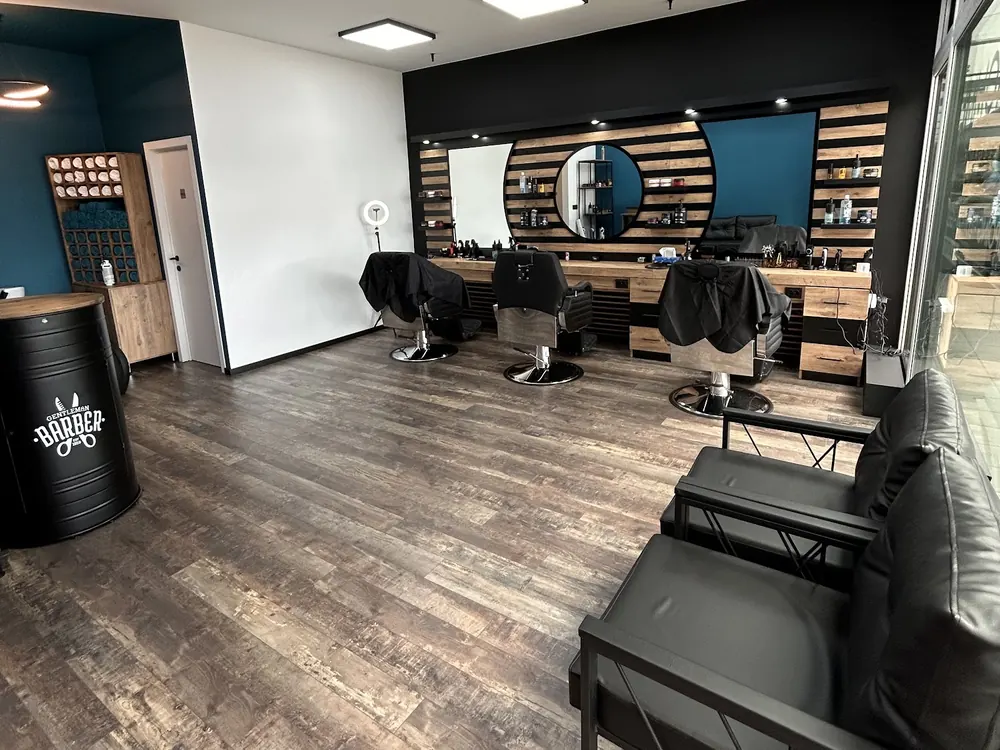

L'art del'élégance,à Wépion.
Prestige Homme est un salon dédié aux hommes, chaussée de Dinant : coupe aux ciseaux ou à la tondeuse, taille de barbe. Choisissez votre créneau en ligne, du lundi au samedi.
4,999 avis Google
- Grand parking devant le salon
- Du lundi au samedi, dès 9 h
- Espèces, Payconiq ou QR code
- Annulation jusqu'à 24 h avant
Coupe, barbe, ou les deux.
Les tarifs affichés sur la page de réservation du salon. Le paiement se fait en espèces, par Payconiq ou par QR code : pas de Bancontact.

Le plan de travail : tondeuses, ciseaux, rasoir.
Prestige Homme
Service homme- Coupe22 €
- Coupe + barbe32 €
- Coupe tondeuse + barbe25 €
- Coupe uniformeCoupe courte, réalisée uniquement à la tondeuse15 €
- Barbe14 €
Tarifs relevés sur Salonkee le 19 novembre 2026.
Choisir un créneauBleu canard, bois brut et cuir noir.
Les postes font face aux grands miroirs ronds posés sur le mur en lattes de bois. Un coin d'attente en cuir, un bac à shampoing, et le parking juste devant la vitrine.







Ce qu'en disent les clients.
Cinq avis publiés sur la fiche Google du salon, cités mot pour mot. La note de 4,9 sur 5 porte sur 99 avis.
Réservez votre fauteuil.
La prestation, le jour, l'heure : trois choix et c'est noté. Les créneaux suivent les horaires du salon, du lundi au samedi.
Passer au salon.
Horaires de la semaine
| Lundi | 9 h – 19 h |
|---|---|
| Mardi | 9 h – 19 h |
| Mercredi | 9 h – 19 h |
| Jeudi | 9 h – 19 h |
| Vendredi | 9 h – 12 h · 15 h – 20 h |
| Samedi | 9 h – 19 h |
| Dimanche | Fermé |
5100 Wépion (Namur)
- Grand parking devant le salon.
- Pas de Bancontact : espèces, Payconiq ou QR code.
- Un empêchement ? Annulez au moins 24 h à l'avance.
- Renseignements par téléphone, Facebook ou Instagram.